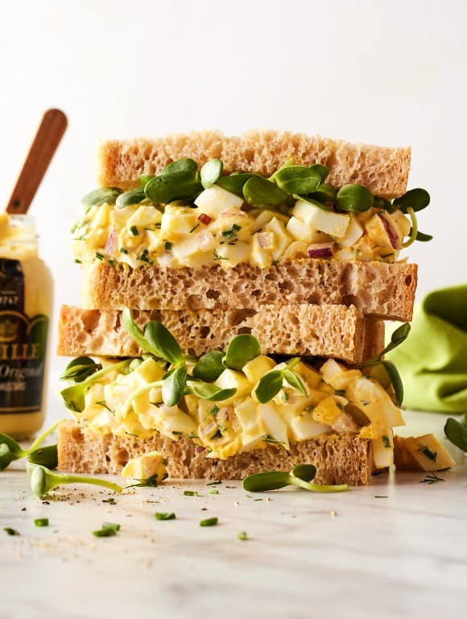

Recipe for the Best(est) Egg Salad

Nothing Beats Delicious Egg Salad, So Versatile...
I started making this egg salad recipe as a way to use up hard boiled eggs
left over from Easter one spring. I thought it would be a one-and-done lunch—just an
easy way to use up my leftovers—but to my surprise, I got hooked. Before long,
I was boiling more eggs to make more egg salad. This stuff is seriously good!
This egg salad recipe is brighter and fresher than most. In my opinion,
it’s what a classic egg salad recipe really wants to be. It’s still rich, creamy, and
flavorful, but it uses far less mayo than is traditional. Lemon juice, Dijon mustard,
and (optional) capers give it a tangy, briny kick, and lots of fresh herbs take it over
the top.
Ingredients
- Eggs, of course! Prepare them according to this recipe for how to
make hard boiled eggs. They’ll be easy to peel and have sunny yellow yolks!
- Mayonnaise – It makes the salad rich and creamy.
- Dijon mustard – For tangy, peppery flavor. Feel free to sub yellow
mustard if you prefer!
- Fresh lemon juice – It adds brightness.
- Red onion – For crunch and oniony bite.
- Fresh herbs – Chives and dill add freshness to the salad and enhance its savory flavor.
- And salt and pepper – To make all the flavors pop!
Directions
- Cook the hard boiled eggs, then peel and chop them.
- Dice the red onion and chop the fresh herbs too.
- Whisk together the mayo, mustard, lemon juice, salt, and pepper in a large bowl.
- Add the remaining ingredients and mix to combine.
- Just chill and season to taste before serving.
- That’s it!
Finally... Sit Back & Enjoy!